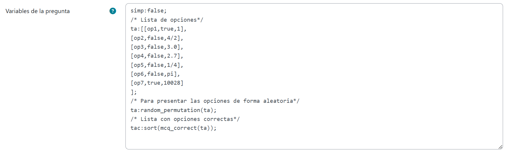
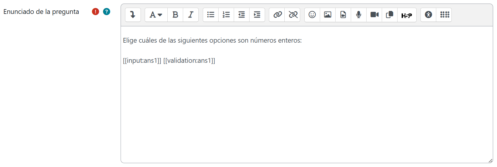
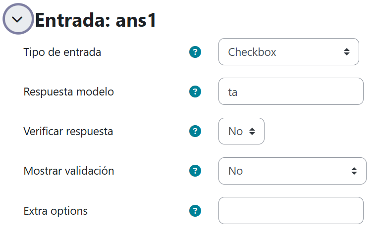
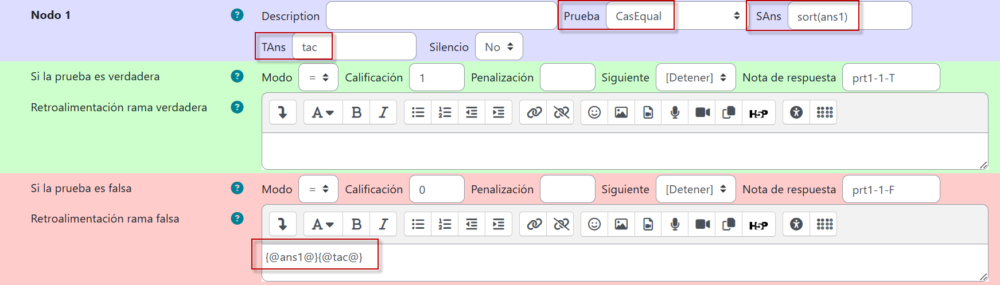
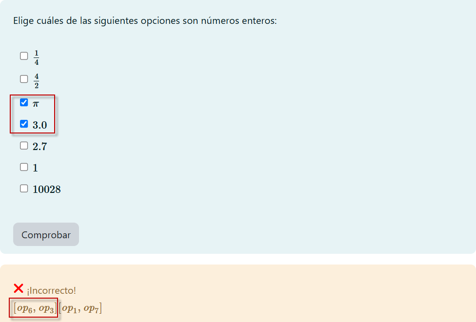
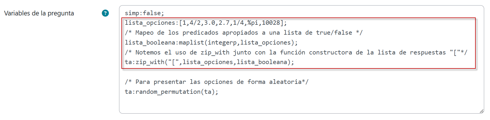

Varias respuestas válidas
En este tipo de pregunta se requiere que el estudiante seleccione una o más de las opciones de respuesta que se le presentan. STACK permite crear preguntas de selección múltiple en las que las respuestas correctas están a cargo del profesor, pero también pueden estar determinadas directamente por Maxima bajo alguno de sus predicados, como veremos enseguida.
Check boxes basados en la selección indicada por el profesor
La respuesta modelo sigue el prototipo expuesto con anterioridad, solo que habrá más de una opción en la que validez cobre el valor true. Crearemos una nueva pregunta STACK con lo siguiente en Variables de la pregunta:

Primero, notemos que las etiquetas de las opciones no están entre comillas. Se trata de valores numéricos que se visualizarán como si hubiesen sido generados con LaTeX. Por lo general, se recomienda incorporar LaTeX bajo las especificaciones expuestas en la sección de preguntas de opción múltiple de esta guía en virtud de que otorga mayor control en cuanto a formato. No obstante, en casos simples como este, omitir el entrecomillado es posible.
Ahora bien, en este ejemplo simp:false; se ha empleado para que al mostrar las opciones no se ejecuten simplificaciones. Por ejemplo, sin esta instrucción 4/2 se visualizaría simplemente como 2.
Resalta también la asignación tac:sort(mcq_correct(ta)); que persigue generar una lista ordenada con las respuestas correctas definidas por el profesor, de manera que en su momento puedan ser cotejadas con las entregadas por los estudiantes.
En Enunciado de la pregunta capturaremos el siguiente texto:

Y en Entrada, seleccionaremos las siguientes opciones dejando como respuesta modelo ta (lo que anticipa que no esperamos una única respuesta sino una lista):

Por último, nos aseguraremos de que el Nodo 1 quede del modo siguiente:

La prueba CasEqual hará el comparativo entre las respuestas del estudiante y las respuestas del profesor. Como en este tipo de preguntas las respuestas son listas es necesario ordenarlas antes de ejecutar la prueba comparativa. sort(ans1) ordena los elementos en la lista de respuestas brindada por el alumno. Recordemos que al definir tac, la lista de respuestas del profesor, ya habíamos empleado el comando sort para ordenar sus elementos.
En la rama falsa, se han colocado los CasText {@ans1@} y {@tac@} con el objeto de que al previsualizar la pregunta nos aseguremos de que ésta funciona correctamente. Luego de ello, puede omitirse este CasText.
Guardados los cambios, la pregunta quedará así:

Check boxes basados en la selección de Maxima
Otra forma de generar este tipo de preguntas es dejarle el trabajo de definir las respuestas correctas a Maxima, lo cual resulta particularmente útil cuando se crean reactivos aleatorizados con fines de individualización.
Duplicaremos la pregunta de selección múltiple anteriormente creada y la guardaremos con un nuevo nombre. Dejaremos todo igual y en el campo Variables de la pregunta haremos el siguiente cambio:

Observemos que en lugar de crear primero una respuesta modelo, hemos creado una lista de Maxima. Puesto que este CAS reconoce al número \(\pi\) con la sintaxis %pi, lo hemos descrito en la lista de ese modo.
Enseguida, hemos aplicado con maplist el predicado integerp a la lista. Esto tiene el objetivo de que Maxima determine cuáles elementos de la lista son enteros, devolviendo true o false, según sea el caso. Los resultados se han almacenado como una lista booleana.
La última instrucción ta:zip_with("[",lista opciones, lista_booleana); nos permite definir finalmente el modelo de respuesta equivalente al del ejemplo previo.